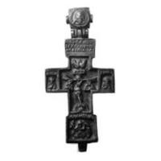
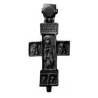

Catalog › CE-0421 · RUB-18
Encolpion bivalv din aramă, cat. 18, Muzeul „Andrei Rubliov”
sec. XVI (1501–1600) · loc necunoscut · Muzeul Central de Cultură și Artă Rusă Veche „Andrei Rubliov” (Центральный музей древнерусской культуры и искусства имени Андрея Рублёва), Moscova
double-sided reliquary cross (enkolpion), aramă; c. XVI (1501–1600); find spot unknown; kept at Muzeul Central de Cultură și Artă Rusă Veche „Andrei Rubliov” (Центральный музей древнерусской культуры и искусства имени Андрея Рублёва), Moscova.




Identificare
- Categorie
- Encolpion bivalv (relicvar)
- Material
- Aramă
- Tehnică
- Turnare în relief
- Dimensiuni
- Î 102 × L 48 × Gr 7 mm
Iconografie
- Avers
- Sf. Ioan
- Descriere avers
- În centru, Răstignirea cu busturile Maicii Domnului și ale apostolului Ioan Evanghelistul. La capetele brațului transversal, busturi ale ierarhilor Vasile cel Mare și Grigore Teologul; la capătul de jos, mare mucenic Nichita lovind dracul.
- Revers
- Sf. Nicolae
- Descriere revers
- În centru, arhidiaconul Ștefan. La capete, busturi ale ierarhului Nicolae, ale mucenicului Mina și ale cuvioșilor Serghie și Nikon de Radonej.
Datare și atribuire
- Datare
- sec. XVI (1501–1600)
- Centru
- Necunoscut
Descoperire
- Context
- Colecție (fără context)
- Coordonate
- 55.7487° N, 37.6701° E
- Precizia locului
- Loc de păstrare (loc de descoperire incert)
Păstrare și referințe
- Colecție
- Muzeul Central de Cultură și Artă Rusă Veche „Andrei Rubliov” (Центральный музей древнерусской культуры и искусства имени Андрея Рублёва), Moscova
- Bibliografie
- С. В. Гнутова, Е. Я. Зотова, Кресты, иконы, складни. Медное художественное литье XI — начала XX века из собрания Центрального музея древнерусской культуры и искусства имени Андрея Рублева : Альбом, Moscova, Интебрук-бизнес, 2000, 133 + 2 p. [Gnutova, Zotova 2000], cat. nr. 18, cu fotografia reprodusă la același număr. Text și imagini pe azbyka.ru: https://azbyka.ru/otechnik/ikona/kresty-ikony-skladni-mednoe-hudozhestvennoe-lite-11-nachala-20-veka-iz-sobranija-tsentralnogo-muzeja-drevnerusskoj-kultury-i-iskusstva-imeni-andreja-rubleva/2 (accesat 17.10.2026)
- Figura
- Gnutova, Zotova 2000, fotografia de la cat. 18
- Planșe
- Gnutova, Zotova 2000, secțiunea „Кресты”, cat. nr. 18 (pagina tipărită nu e dată în ediția online)
- Observații
- Sursa notează că imaginea arhidiaconului Ștefan apare în plastica mică (cruci și icoane) și că „крест выполнен с костяного образца XV в.” (crucea reia un model din os din sec. XV). Locul descoperirii nu e cunoscut cu precizie; punctul de pe hartă marchează locul de păstrare (Muzeul Central de Cultură și Artă Rusă Veche „Andrei Rubliov”), nu locul descoperirii. Coordonate: nu sunt date în sursă.
Citare: Corpus Encolpiorum, CE-0421, Encolpion bivalv din aramă, cat. 18, Muzeul „Andrei Rubliov”, --root/piese/RUB-18/ (accesat 2026-10-17).